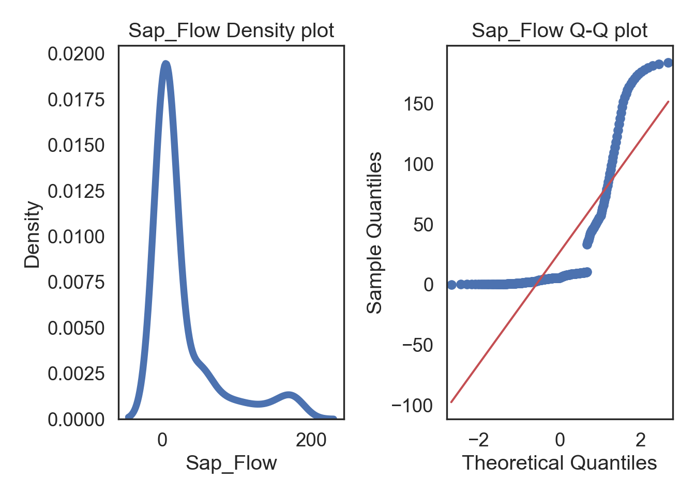
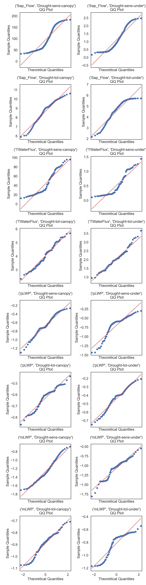

# Import all required libraries
# Data analysis and manipulation
import pandas as pd
# Working with arrays
import numpy as np
# Statistical visualization
import seaborn as sns
# Matlab plotting for Python
import matplotlib.pyplot as plt
# Data analysis
import statistics as stat
# Predictive data analysis: process data
from sklearn import preprocessing as pproc
import scipy.stats as stats
# Visualizing missing values
import missingno as msno
# Statistical modeling
import statsmodels.api as sm
# increase font size of all seaborn plot elements
sns.set(font_scale = 1.25)Exploring like a Data Adventurer
Purpose of this chapter
Exploring the normality of numerical columns in a novel data set
Take-aways
- Using summary statistics to better understand individual columns in a data set.
- Assessing data normality in numerical columns.
- Assessing data normality within groups.
Required Setup
We first need to prepare our environment with the necessary libraries and set a global theme for publishable plots in seaborn.
Load and Examine a Data Set
We will be using open source data from UArizona researchers that investigates the effects of climate change on canopy trees. (Meredith, Ladd, and Werner 2021)
# Read csv
data = pd.read_csv("data/Data_Fig2_Repo.csv")
# Convert 'Date' column to datetime
data['Date'] = pd.to_datetime(data['Date'])
# What does the data look like
data.head() Date Group Sap_Flow TWaterFlux pLWP mLWP
0 2019-10-04 Drought-sens-canopy 184.040975 82.243292 -0.263378 -0.679769
1 2019-10-04 Drought-sens-under 2.475989 1.258050 -0.299669 -0.761326
2 2019-10-04 Drought-tol-canopy 10.598949 4.405479 -0.437556 -0.722557
3 2019-10-04 Drought-tol-under 4.399854 2.055276 -0.205224 -0.702858
4 2019-10-05 Drought-sens-canopy 182.905444 95.865255 -0.276928 -0.708261Diagnose your Data
# What are the properties of the data
diagnose = data.info()<class 'pandas.core.frame.DataFrame'>
RangeIndex: 588 entries, 0 to 587
Data columns (total 6 columns):
# Column Non-Null Count Dtype
--- ------ -------------- -----
0 Date 588 non-null datetime64[ns]
1 Group 588 non-null object
2 Sap_Flow 480 non-null float64
3 TWaterFlux 588 non-null float64
4 pLWP 276 non-null float64
5 mLWP 308 non-null float64
dtypes: datetime64[ns](1), float64(4), object(1)
memory usage: 27.7+ KBColumn: name of each variableNon-Null Count: number of missing valuesDType: data type of each variable
Box Plot

Skewness

NOTE
- “Skewness” has multiple definitions. Several underlying equations mey be at play
- Skewness is “designed” for distributions with one peak (unimodal); it’s meaningless for distributions with multiple peaks (multimodal).
- Most default skewness definitions are not robust: a single outlier could completely distort the skewness value.
- We can’t make conclusions about the locations of the mean and the median based on the skewness sign.
Kurtosis

NOTE
- There are multiple definitions of kurtosis - i.e., “kurtosis” and “excess kurtosis,” but there are other definitions of this measure.
- Kurtosis may work fine for distributions with one peak (unimodal); it’s meaningless for distributions with multiple peaks (multimodal).
- The classic definition of kurtosis is not robust: it could be easily spoiled by extreme outliers.
Describe your Continuous Data
# Summary statistics of our numerical columns
data.describe() Date Sap_Flow TWaterFlux pLWP mLWP
count 588 480.000000 588.000000 276.000000 308.000000
mean 2019-12-16 00:00:00 25.091576 11.925722 -0.609055 -1.029703
min 2019-10-04 00:00:00 0.172630 0.101381 -1.433333 -1.812151
25% 2019-11-09 00:00:00 2.454843 1.293764 -0.714008 -1.227326
50% 2019-12-16 00:00:00 5.815661 2.995357 -0.586201 -0.946656
75% 2020-01-22 00:00:00 16.371703 7.577102 -0.450000 -0.808571
max 2020-02-27 00:00:00 184.040975 96.012719 -0.205224 -0.545165
std NaN 40.520386 19.048809 0.227151 0.295834count: number of observationsmean: arithmetic mean (average value)std: standard deviationmin: minimum value25%: 1/4 quartile, 25th percentile50%: median, 50th percentile75%: 3/4 quartile, 75th percentilemax: maximum value
# Make a copy of the data
dataCopy = data.copy()
# Select only numerical columns
dataRed = dataCopy.select_dtypes(include = np.number)
# List of numerical columns
dataRedColsList = dataRed.columns[...]
# For all values in the numerical column list from above
for i_col in dataRedColsList:
# List of the values in i_col
dataRed_i = dataRed.loc[:,i_col]
# Define the 25th and 75th percentiles
q25, q75 = round((dataRed_i.quantile(q = 0.25)), 3), round((dataRed_i.quantile(q = 0.75)), 3)
# Define the interquartile range from the 25th and 75th percentiles defined above
IQR = round((q75 - q25), 3)
# Calculate the outlier cutoff
cut_off = IQR * 1.5
# Define lower and upper cut-offs
lower, upper = round((q25 - cut_off), 3), round((q75 + cut_off), 3)
# Skewness
skewness = round((dataRed_i.skew()), 3)
# Kurtosis
kurtosis = round((dataRed_i.kurt()), 3)
# Number of outliers
outliers = dataRed_i[(dataRed_i < lower) | (dataRed_i > upper)].count()
# Print a blank row
print('')
# Print the column name
print(i_col)
# For each value of i_col, print the 25th and 75th percentiles and IQR
print('q25 =', q25, 'q75 =', q75, 'IQR =', IQR)
# Print the lower and upper cut-offs
print('lower, upper:', lower, upper)
# Print skewness and kurtosis
print('skewness =', skewness, 'kurtosis =', kurtosis)
# Count the number of outliers outside the (lower, upper) limits, print that value
print('Number of Outliers: ', outliers)
Sap_Flow
q25 = 2.455 q75 = 16.372 IQR = 13.917
lower, upper: -18.42 37.248
skewness = 2.153 kurtosis = 4.197
Number of Outliers: 116
TWaterFlux
q25 = 1.294 q75 = 7.577 IQR = 6.283
lower, upper: -8.13 17.002
skewness = 2.081 kurtosis = 3.884
Number of Outliers: 139
pLWP
q25 = -0.714 q75 = -0.45 IQR = 0.264
lower, upper: -1.11 -0.054
skewness = -1.105 kurtosis = 1.767
Number of Outliers: 12
mLWP
q25 = -1.227 q75 = -0.809 IQR = 0.418
lower, upper: -1.854 -0.182
skewness = -0.797 kurtosis = -0.181
Number of Outliers: 0q25: 1/4 quartile, 25th percentileq75: 3/4 quartile, 75th percentileIQR: interquartile range (q75-q25)lower: lower limit of \(1.5*IQR\) used to calculate outliersupper: upper limit of \(1.5*IQR\) used to calculate outliersskewness: skewnesskurtosis: kurtosis
Describe Categorical Variables
# Select only categorical columns (objects)
data.describe(exclude=[np.number]) Date Group
count 588 588
unique NaN 4
top NaN Drought-sens-canopy
freq NaN 147
mean 2019-12-16 00:00:00 NaN
min 2019-10-04 00:00:00 NaN
25% 2019-11-09 00:00:00 NaN
50% 2019-12-16 00:00:00 NaN
75% 2020-01-22 00:00:00 NaN
max 2020-02-27 00:00:00 NaNGroup Descriptive Statistics
# Grouped describe by one column, stacked
Groups = data.groupby('Group').describe().unstack(1)
# Print all rows
print(Groups.to_string()) Group
Date count Drought-sens-canopy 147
Drought-sens-under 147
Drought-tol-canopy 147
Drought-tol-under 147
mean Drought-sens-canopy 2019-12-16 00:00:00
Drought-sens-under 2019-12-16 00:00:00
Drought-tol-canopy 2019-12-16 00:00:00
Drought-tol-under 2019-12-16 00:00:00
min Drought-sens-canopy 2019-10-04 00:00:00
Drought-sens-under 2019-10-04 00:00:00
Drought-tol-canopy 2019-10-04 00:00:00
Drought-tol-under 2019-10-04 00:00:00
25% Drought-sens-canopy 2019-11-09 12:00:00
Drought-sens-under 2019-11-09 12:00:00
Drought-tol-canopy 2019-11-09 12:00:00
Drought-tol-under 2019-11-09 12:00:00
50% Drought-sens-canopy 2019-12-16 00:00:00
Drought-sens-under 2019-12-16 00:00:00
Drought-tol-canopy 2019-12-16 00:00:00
Drought-tol-under 2019-12-16 00:00:00
75% Drought-sens-canopy 2020-01-21 12:00:00
Drought-sens-under 2020-01-21 12:00:00
Drought-tol-canopy 2020-01-21 12:00:00
Drought-tol-under 2020-01-21 12:00:00
max Drought-sens-canopy 2020-02-27 00:00:00
Drought-sens-under 2020-02-27 00:00:00
Drought-tol-canopy 2020-02-27 00:00:00
Drought-tol-under 2020-02-27 00:00:00
std Drought-sens-canopy NaN
Drought-sens-under NaN
Drought-tol-canopy NaN
Drought-tol-under NaN
Sap_Flow count Drought-sens-canopy 120.0
Drought-sens-under 120.0
Drought-tol-canopy 120.0
Drought-tol-under 120.0
mean Drought-sens-canopy 85.269653
Drought-sens-under 1.448825
Drought-tol-canopy 9.074309
Drought-tol-under 4.573516
min Drought-sens-canopy 33.37045
Drought-sens-under 0.17263
Drought-tol-canopy 5.90461
Drought-tol-under 2.17178
25% Drought-sens-canopy 53.975162
Drought-sens-under 0.534165
Drought-tol-canopy 8.11941
Drought-tol-under 4.053346
50% Drought-sens-canopy 76.717782
Drought-sens-under 1.665492
Drought-tol-canopy 9.286552
Drought-tol-under 4.944842
75% Drought-sens-canopy 94.068107
Drought-sens-under 2.194299
Drought-tol-canopy 10.404117
Drought-tol-under 5.139685
max Drought-sens-canopy 184.040975
Drought-sens-under 2.475989
Drought-tol-canopy 10.705455
Drought-tol-under 5.726712
std Drought-sens-canopy 41.313962
Drought-sens-under 0.803858
Drought-tol-canopy 1.39567
Drought-tol-under 0.90243
TWaterFlux count Drought-sens-canopy 147.0
Drought-sens-under 147.0
Drought-tol-canopy 147.0
Drought-tol-under 147.0
mean Drought-sens-canopy 40.404061
Drought-sens-under 0.75177
Drought-tol-canopy 4.357234
Drought-tol-under 2.189824
min Drought-sens-canopy 12.377738
Drought-sens-under 0.101381
Drought-tol-canopy 2.036843
Drought-tol-under 0.953906
25% Drought-sens-canopy 25.220908
Drought-sens-under 0.27419
Drought-tol-canopy 3.601341
Drought-tol-under 1.735003
50% Drought-sens-canopy 38.630891
Drought-sens-under 0.824875
Drought-tol-canopy 4.460778
Drought-tol-under 2.198131
75% Drought-sens-canopy 50.096197
Drought-sens-under 1.11289
Drought-tol-canopy 5.112844
Drought-tol-under 2.686605
max Drought-sens-canopy 96.012719
Drought-sens-under 1.801823
Drought-tol-canopy 5.97689
Drought-tol-under 3.654336
std Drought-sens-canopy 19.027997
Drought-sens-under 0.429073
Drought-tol-canopy 0.940353
Drought-tol-under 0.597511
pLWP count Drought-sens-canopy 69.0
Drought-sens-under 69.0
Drought-tol-canopy 69.0
Drought-tol-under 69.0
mean Drought-sens-canopy -0.669932
Drought-sens-under -0.696138
Drought-tol-canopy -0.629909
Drought-tol-under -0.440243
min Drought-sens-canopy -1.299263
Drought-sens-under -1.433333
Drought-tol-canopy -0.863656
Drought-tol-under -0.746667
25% Drought-sens-canopy -0.790573
Drought-sens-under -0.8
Drought-tol-canopy -0.706479
Drought-tol-under -0.520487
50% Drought-sens-canopy -0.705942
Drought-sens-under -0.592118
Drought-tol-canopy -0.602841
Drought-tol-under -0.406439
75% Drought-sens-canopy -0.47329
Drought-sens-under -0.521217
Drought-tol-canopy -0.571356
Drought-tol-under -0.360789
max Drought-sens-canopy -0.263378
Drought-sens-under -0.299669
Drought-tol-canopy -0.437556
Drought-tol-under -0.205224
std Drought-sens-canopy 0.24639
Drought-sens-under 0.283935
Drought-tol-canopy 0.095571
Drought-tol-under 0.131879
mLWP count Drought-sens-canopy 77.0
Drought-sens-under 77.0
Drought-tol-canopy 77.0
Drought-tol-under 77.0
mean Drought-sens-canopy -1.319148
Drought-sens-under -1.097537
Drought-tol-canopy -0.892554
Drought-tol-under -0.809572
min Drought-sens-canopy -1.812151
Drought-sens-under -1.808333
Drought-tol-canopy -1.073619
Drought-tol-under -1.168716
25% Drought-sens-canopy -1.525563
Drought-sens-under -1.335521
Drought-tol-canopy -0.945841
Drought-tol-under -0.907041
50% Drought-sens-canopy -1.354771
Drought-sens-under -1.054159
Drought-tol-canopy -0.890061
Drought-tol-under -0.735647
75% Drought-sens-canopy -1.111942
Drought-sens-under -0.907564
Drought-tol-canopy -0.828777
Drought-tol-under -0.699087
max Drought-sens-canopy -0.679769
Drought-sens-under -0.546152
Drought-tol-canopy -0.707789
Drought-tol-under -0.545165
std Drought-sens-canopy 0.298107
Drought-sens-under 0.263522
Drought-tol-canopy 0.091729
Drought-tol-under 0.170603Testing Normality
- Shapiro-Wilk test & Q-Q plots
- Testing overall normality of two columns
- Testing normality of groups
Normality of Columns
Shapiro-Wilk Test
Shapiro-Wilk test looks at whether a target distribution is sample form a normal distribution
# Make a copy of the data
dataCopy = data.copy()
# Remove NAs
dataCopyFin = dataCopy.dropna()
# Specify desired column
i_col = dataCopyFin.Sap_Flow
# Normality test
stat, p = stats.shapiro(i_col)
print('\nShapiro-Wilk Test for Normality\n\nSap_Flow\nStatistic = %.3f, p = %.3f' % (stat, p))
Shapiro-Wilk Test for Normality
Sap_Flow
Statistic = 0.603, p = 0.000# Interpret
alpha = 0.05
if p > alpha:
print('Sample looks Gaussian (fail to reject H0)')
else:
print('Sample does not look Gaussian (reject H0)')Sample does not look Gaussian (reject H0)You can also run the Shapiro-Wilk test on all numerical columns with a for-loop
# Make a copy of the data
dataCopy = data.copy()
# Remove NAs
dataCopyFin = dataCopy.dropna()
# Select only numerical columns
dataRed = dataCopyFin.select_dtypes(include = np.number)
# List of numerical columns
dataRedColsList = dataRed.columns[...]
# For all values in the numerical column list from above
for i_col in dataRedColsList:
# List of the values in i_col
dataRed_i = dataRed.loc[:,i_col]
# Normality test
stat, p = stats.shapiro(dataRed_i)
# Print a blank, the column name, the statistic and p-value
print('')
print(i_col)
print('Statistic = %.3f, p = %.3f' % (stat, p))
# Interpret
alpha = 0.05
# Print the interpretation
if p > alpha:
print('Sample looks Gaussian (fail to reject H0)')
else:
print('Sample does not look Gaussian (reject H0)')
Sap_Flow
Statistic = 0.603, p = 0.000
Sample does not look Gaussian (reject H0)
TWaterFlux
Statistic = 0.600, p = 0.000
Sample does not look Gaussian (reject H0)
pLWP
Statistic = 0.929, p = 0.000
Sample does not look Gaussian (reject H0)
mLWP
Statistic = 0.940, p = 0.000
Sample does not look Gaussian (reject H0)Q-Q Plots
Plots of the quartiles of a target data set and plot it against predicted quartiles from a normal distribution.
# Change theme to "white"
sns.set_style("white")
# Make a copy of the data
dataCopy = data.copy()
# Remove NAs
dataCopyFin = dataCopy.dropna()
# Specify desired column
i_col = dataCopyFin.Sap_Flow
# Subplots
fig, (ax1, ax2) = plt.subplots(ncols = 2, nrows = 1)
# Density plot
sns.kdeplot(i_col, linewidth = 5, ax = ax1)
ax1.set_title('Sap_Flow Density plot')
# Q-Q plot
sm.qqplot(i_col, line='s', ax = ax2)
ax2.set_title('Sap_Flow Q-Q plot')
plt.tight_layout()
plt.show()
You can also produce these plots for all numerical columns with a for-loop (output not shown).
# Change theme to "white"
sns.set_style("white")
# Make a copy of the data
dataCopy = data.copy()
# Remove NAs
dataCopyFin = dataCopy.dropna()
# Select only numerical columns
dataRed = dataCopyFin.select_dtypes(include = np.number)
# Combine multiple plots, the number of columns and rows is derived from the number of numerical columns from above.
# Overall figure that subplots fill
fig, axes = plt.subplots(ncols = 2, nrows = 4, sharex = True, figsize = (4, 4))
# Fill the subplots
for k, ax in zip(dataRed.columns, np.ravel(axes)):
# Subplots
fig, (ax1, ax2) = plt.subplots(ncols = 2, nrows = 1)
# Density plot
sns.kdeplot(dataRed[k], linewidth = 5, ax = ax1)
ax1.set_title(f'{k} Density Plot')
# Q-Q plot
sm.qqplot(dataRed[k], line='s', ax = ax2)
ax2.set_title(f'{k} QQ Plot')
plt.tight_layout()
plt.show()Normality within Groups
Looking within Age_group at the subgroup normality.
Shapiro-Wilk Test
# Make a copy of the data
dataCopy = data.copy()
# Remove NAs
dataCopyFin = dataCopy.dropna()
# Pivot the data from long-to-wide with pivot, using Date as the index, so that a column is created for each Group and numerical column subset
dataPivot = dataCopyFin.pivot(index = 'Date', columns = 'Group', values = ['Sap_Flow', 'TWaterFlux', 'pLWP', 'mLWP'])
# Select only numerical columns
dataRed = dataPivot.select_dtypes(include = np.number)
# List of numerical columns
dataRedColsList = dataRed.columns[...]
# For all values in the numerical column list from above
for i_col in dataRedColsList:
# List of the values in i_col
dataRed_i = dataRed.loc[:,i_col]
# normality test
stat, p = stats.shapiro(dataRed_i)
print('')
print(i_col)
print('Statistics = %.3f, p = %.3f' % (stat, p))
# interpret
alpha = 0.05
if p > alpha:
print('Sample looks Gaussian (fail to reject H0)')
else:
print('Sample does not look Gaussian (reject H0)')
('Sap_Flow', 'Drought-sens-canopy')
Statistics = 0.869, p = 0.000
Sample does not look Gaussian (reject H0)
('Sap_Flow', 'Drought-sens-under')
Statistics = 0.889, p = 0.000
Sample does not look Gaussian (reject H0)
('Sap_Flow', 'Drought-tol-canopy')
Statistics = 0.950, p = 0.008
Sample does not look Gaussian (reject H0)
('Sap_Flow', 'Drought-tol-under')
Statistics = 0.908, p = 0.000
Sample does not look Gaussian (reject H0)
('TWaterFlux', 'Drought-sens-canopy')
Statistics = 0.885, p = 0.000
Sample does not look Gaussian (reject H0)
('TWaterFlux', 'Drought-sens-under')
Statistics = 0.856, p = 0.000
Sample does not look Gaussian (reject H0)
('TWaterFlux', 'Drought-tol-canopy')
Statistics = 0.973, p = 0.147
Sample looks Gaussian (fail to reject H0)
('TWaterFlux', 'Drought-tol-under')
Statistics = 0.977, p = 0.233
Sample looks Gaussian (fail to reject H0)
('pLWP', 'Drought-sens-canopy')
Statistics = 0.969, p = 0.086
Sample looks Gaussian (fail to reject H0)
('pLWP', 'Drought-sens-under')
Statistics = 0.867, p = 0.000
Sample does not look Gaussian (reject H0)
('pLWP', 'Drought-tol-canopy')
Statistics = 0.952, p = 0.010
Sample does not look Gaussian (reject H0)
('pLWP', 'Drought-tol-under')
Statistics = 0.964, p = 0.044
Sample does not look Gaussian (reject H0)
('mLWP', 'Drought-sens-canopy')
Statistics = 0.962, p = 0.034
Sample does not look Gaussian (reject H0)
('mLWP', 'Drought-sens-under')
Statistics = 0.956, p = 0.016
Sample does not look Gaussian (reject H0)
('mLWP', 'Drought-tol-canopy')
Statistics = 0.962, p = 0.034
Sample does not look Gaussian (reject H0)
('mLWP', 'Drought-tol-under')
Statistics = 0.852, p = 0.000
Sample does not look Gaussian (reject H0)Q-Q Plots
# Make a copy of the data
dataCopy = data.copy()
# Remove NAs
dataCopyFin = dataCopy.dropna()
# Pivot the data from long-to-wide with pivot, using Date as the index, so that a column is created for each Group and numerical column subset
dataPivot = dataCopyFin.pivot(index = 'Date', columns = 'Group', values = ['Sap_Flow', 'TWaterFlux', 'pLWP', 'mLWP'])
# Select only numerical columns
dataRed = dataPivot.select_dtypes(include = np.number)
# Combine multiple plots, the number of columns and rows is derived from the number of numerical columns from above.
fig, axes = plt.subplots(ncols = 2, nrows = 8, sharex = True, figsize = (2 * 4, 8 * 4))
# Generate figures for all numerical grouped data subsets
for k, ax in zip(dataRed.columns, np.ravel(axes)):
sm.qqplot(dataRed[k], line = 's', ax = ax)
ax.set_title(f'{k}\n QQ Plot')
plt.tight_layout()
plt.show()
Meredith, Laura, S. Nemiah Ladd, and Christiane Werner. 2021. “Data for "Ecosystem Fluxes During Drought and Recovery in an Experimental Forest".” University of Arizona Research Data Repository. https://doi.org/10.25422/AZU.DATA.14632593.V1.